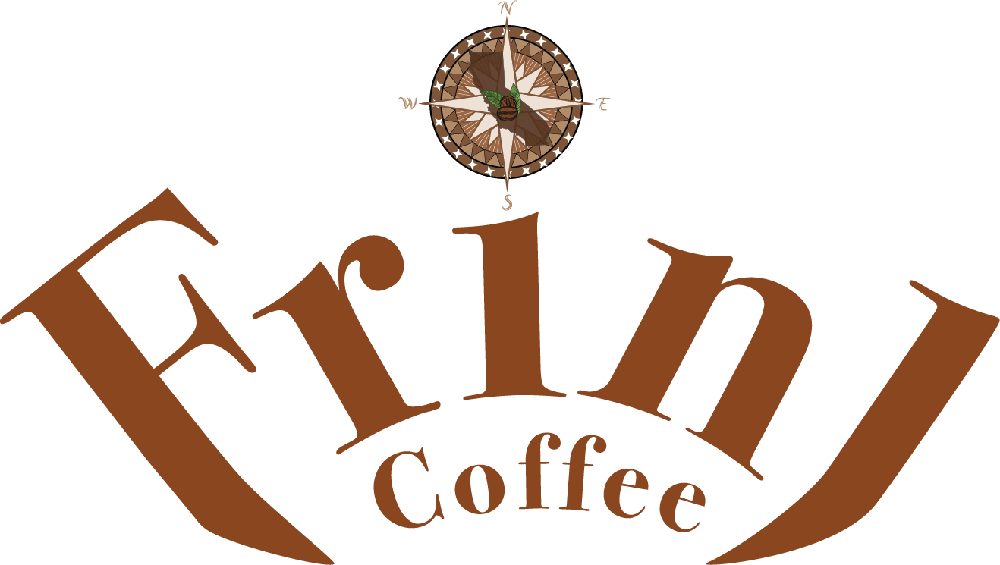
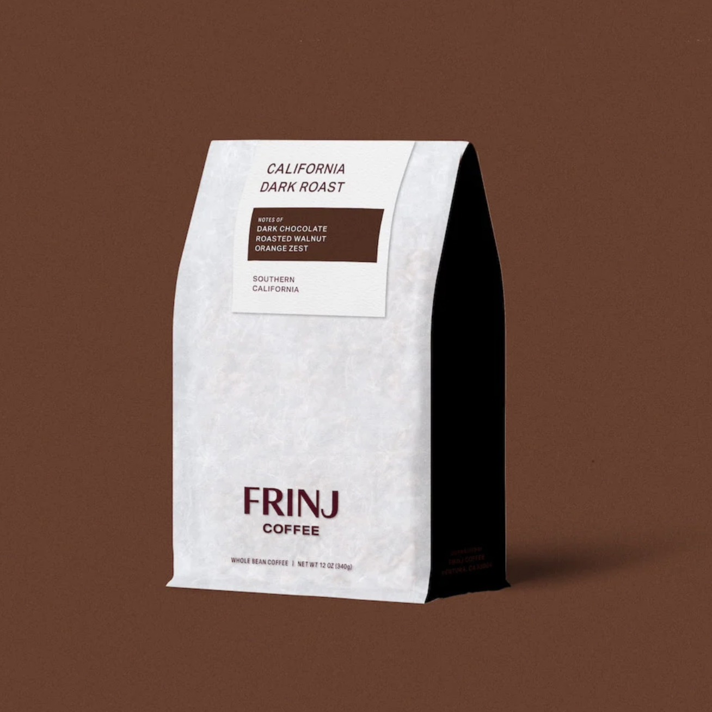
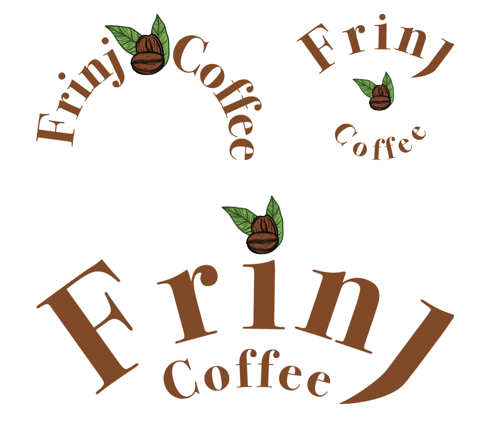
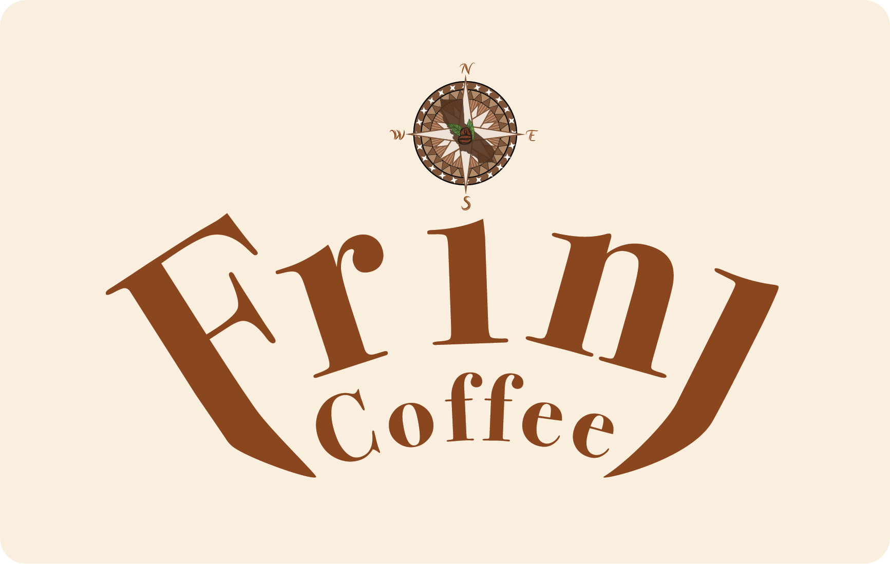
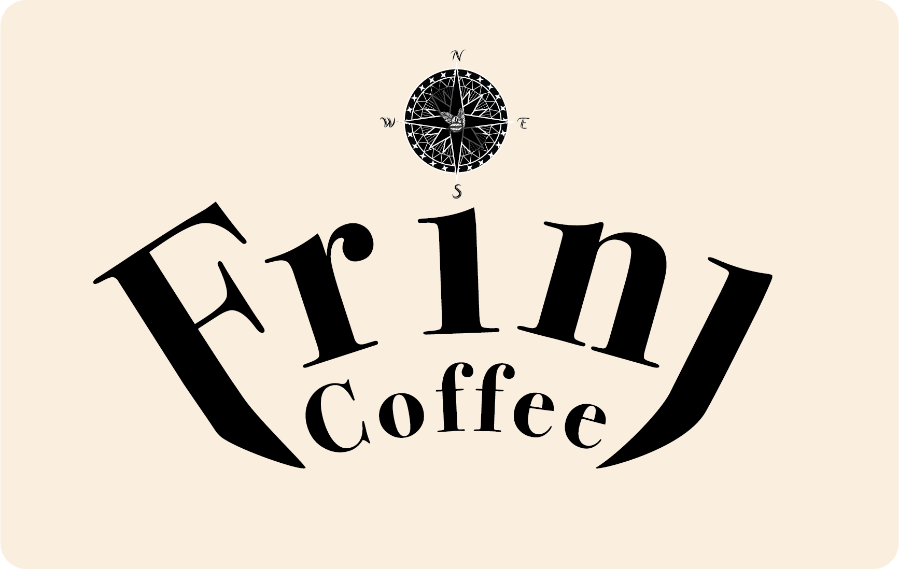
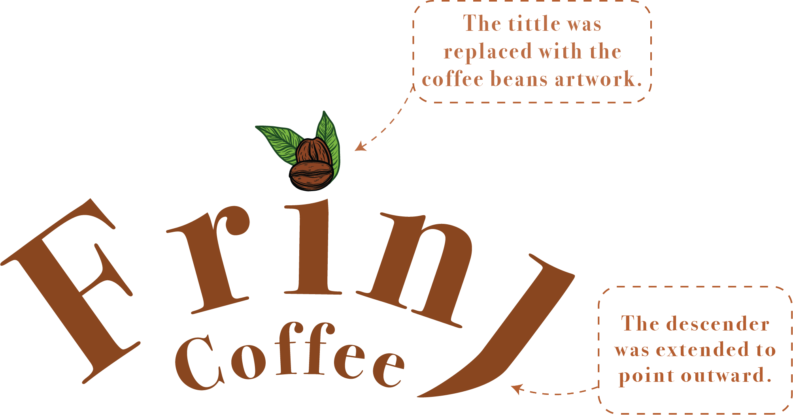

- Client:
- Timeline:
- Role:
- Tools:
Description:
I began with the original Frinj Coffee logo and refined its structure by converting "Rin" and "coffee" to lowercase for a more modern and balanced appearance. The descenders of the "F" and "J" were extended to frame the word "coffee" creating a cohesive visual flow. To personalize the design further, a compass icon was introduced to replace the tittle, symbolizing Frinj Coffee's connection to exploration and its origin in Santa Barbara, California.
Original Logo

This would be the original Frinj Coffee logo from the company's website, which features all capital letters.
Initial Logo Concept

Here are the various Frinj Coffee logo variations I developed throughout the design process, leading to the creation of my final logo design.
;Logo in different color variations


The Frinj Coffee logo is displayed in two color variations — black & white and color — and in different sizes to showcase flexibility across applications.
Logo Construction

The Frinj Coffee logo was constructed using the font Bodoni 72 Bold
Mockups
This mockup showcases the Frinj Coffee logo applied across branded merchandise. The design demonstrates the logo's versatility and visual impact in digital and physical applications, maintaining a cohesive brand identity.
Reflection
Frinj Project was a rebranding initiative for a California-based coffee company, focused on creating a cohesive and elevated brand identity. The project's success is reflected in the thoughtful execution of the logo—particularly the intricate detailing above the 'Frinj' name—as well as the supporting mockups and curated color palette. While developing a concept that felt both distinctive and authentic presented initial challenges, these were ultimately resolved through strategic refinement of the logo and custom letterforms, resulting in a unified and impactful visual system.